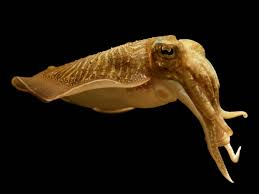
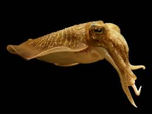

Los bivalvos (Bivalvia, bi = dos; valvia = valva o placa), lamelibranquios (Lamellibranchia) o pelecípodos (Pelecypoda) son una clase del filo Mollusca con unas 13 000 especies, la mayoría marinas. Presentan un caparazón con dos valvas laterales, generalmente simétricas, unidas por una bisagra y ligamentos. Dichas valvas se cierran por acción de uno o dos músculos aductores.
El estilo de vida de estos animales hace que muchos de sus órganos estén menos desarrollados que en otros tipos de moluscos. El ejemplo más claro lo tenemos en el sistema nervioso. No tienen un cerebro definido, sólo una serie de pares de ganglios conectados entre ellos y encargados de controlar la cavidad del manto, el pie y otros órganos. De la misma manera sus sentidos están poco desarrollados y estos consisten mayoritariamente en sensores mecánicos y químicos. Algunos de ellos, aunque no todos, tienen ojos bastante sencillos en el margen del manto y todos ellos tienen algún tipo de fotoreceptor capaz de captar la presencia o ausencia de luz a su alrededor.
La gran mayoría de bivalvos se alimentan mediante la filtración de agua, de la que capturan comida en forma de partículas como el fitoplancton. Todos cuentan con dos estructuras, los sifones, por donde entra y sale el agua filtrada. Algunas especies son carnívoras y tienen el sistema digestivo adaptado para poder ingerir presas relativamente grandes. En general el tracto digestivo es común a todos los moluscos con su esófago, estómago e intestinos. La mayor diferencia es que los bivalvos no disponen de rádula, un órgano muy especializado en los moluscos que se encuentra en la cavidad de entrada al sistema digestivo.
 
